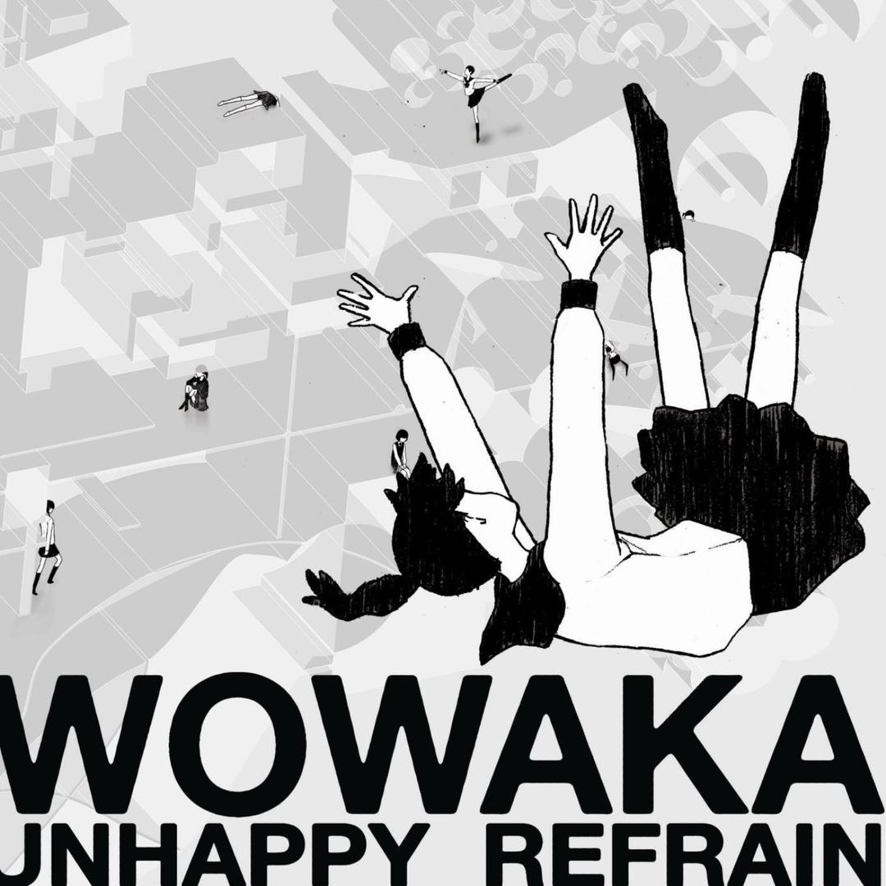

ボカロの天才「現実逃避P」
裏声で歌へ ヒトリエ
wowaka（ヲワカ、1987年〈昭和62年〉11月4日 - 2019年〈平成31年〉4月5日）は、
日本の作詞家、作曲家、編曲家、ボカロP。
ネット発アーティストの先駆けだった。
音楽性
『アンハッピーリフレイン』や『ローリンガール』に代表される、疾走感と十代の女の子の心の揺れ動きを描く世界観が大きな特徴である。 また、本人曰く、「テンポが早い曲を好み、言葉をたたみかけるような曲調が特徴」「曲を作るにあたって、いつも主人公の女の子を用意している」と語っていた。
wowakaの代表作品
